Työt
Eri yrityksiä. Erilaisia digitaalisia kokemuksia.
Kolme valmista konseptiprojektia, kukin rakennettu monisivuisena brändisivustona. Ne ovat itsenäisiä suunnittelukonsepteja — eivät maksavan asiakkaan töitä — ja näyttävät, miten WEBAUR lähestyisi eri yrityksiä.
Hale Barber Studio
Viisisivuinen konsepti itsenäiselle parturille. Sivusto rakentuu rauhalliselle hetkelle tuolissa: luunväri, metsänvihreä ja kuvia huoneesta, ei valmiskuvien hymyistä.
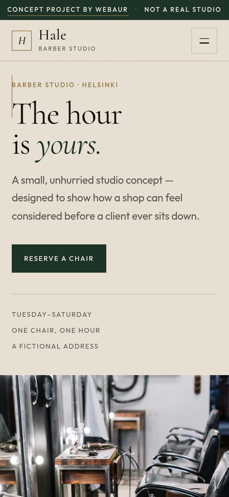
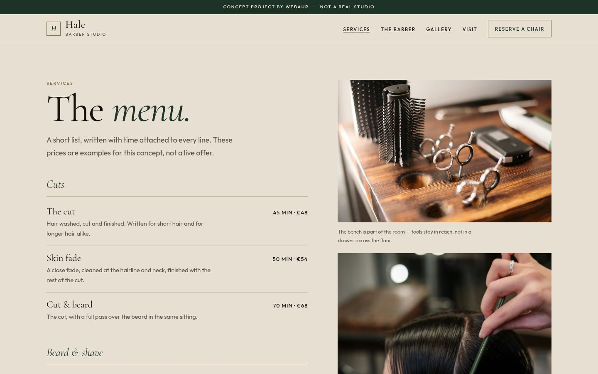
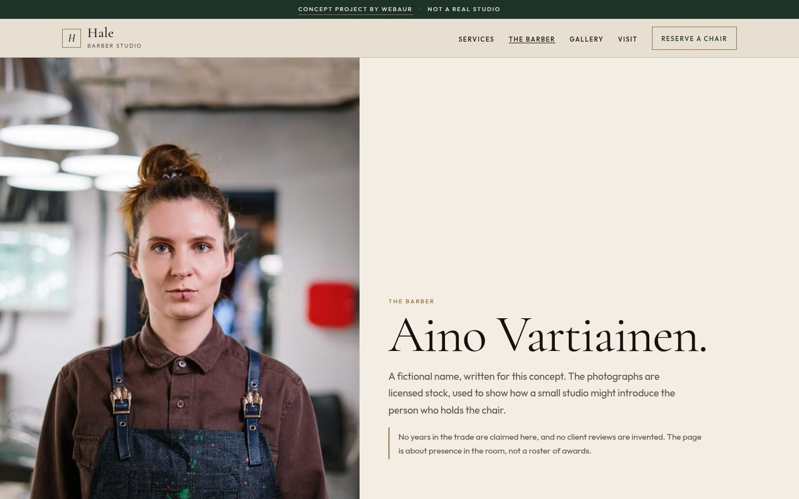
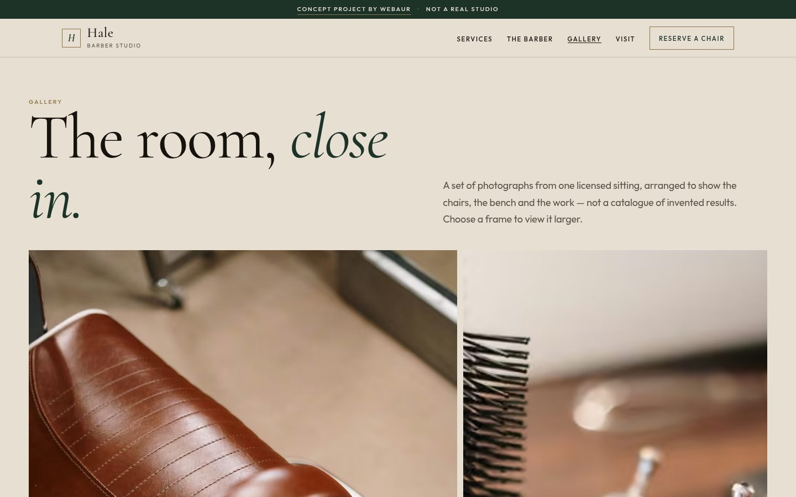
Alto Detail
Tumma showroom-konsepti detailing-studiolle: grafiitti, oksidinpunainen ja elokuvallinen avaus, jossa auto ja otsikko ovat samassa kehyksessä. Viisi sivua, joista tulossivun keskiössä ovat ennen–jälkeen-liukusäätimet.
Keskeinen toiminto. Sama auto, kahdesti. Liukusäätimet vertaavat saman valokuvan kahta käsittelyä. Ne ovat havainnollistavia, eivät todiste maksavasta työstä.
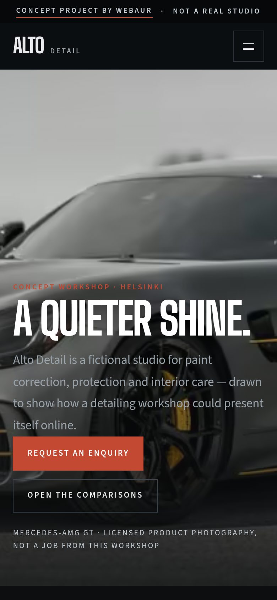
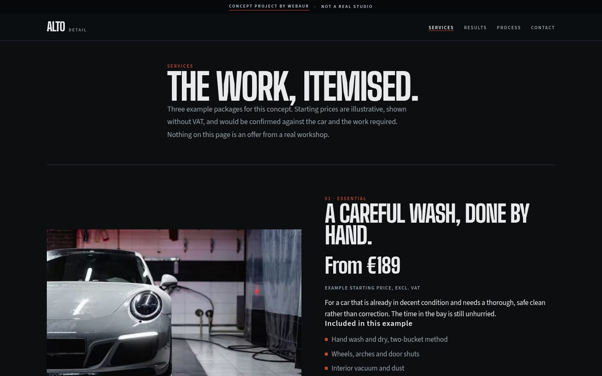
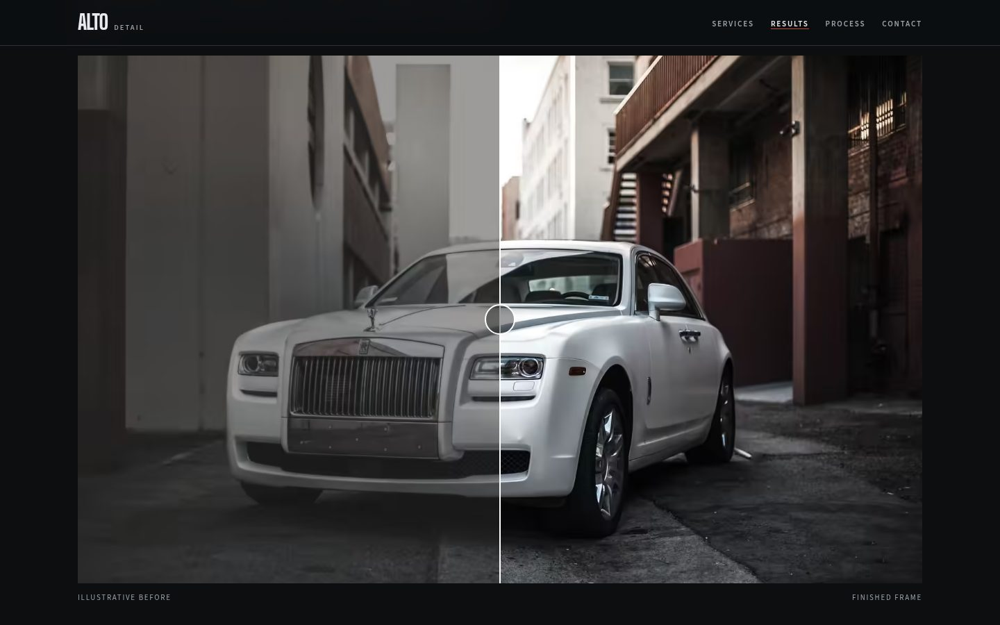
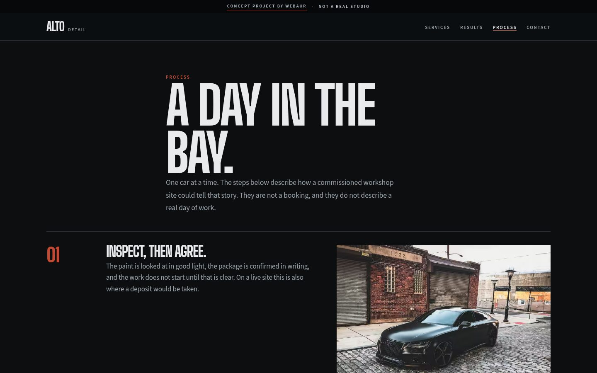
Maison Café
Viisisivuinen kahvilakonsepti pergamentilla, pullonvihreällä ja kuparilla. Sivusto on rakennettu kuin lyhyt julkaisu: pöytä, ruokalista ruokakuvin, huonetutkielma, tarina ja vierailusivu, joka myöntää elävänsä vain tarinassa.
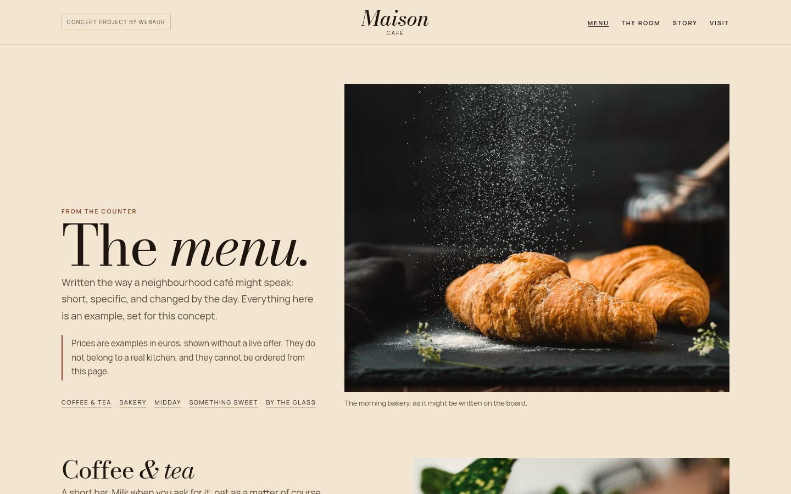
Ruokalista
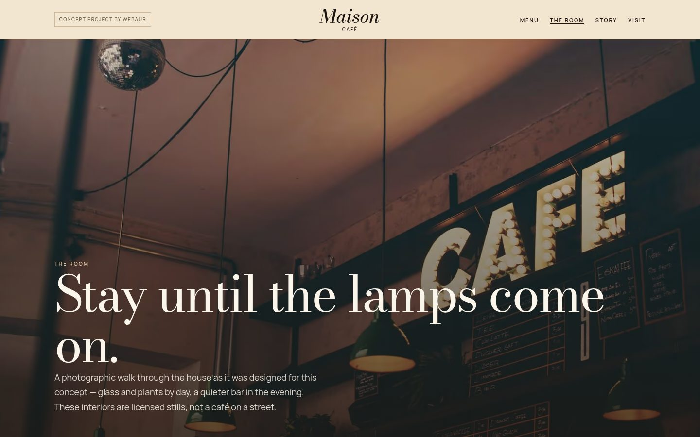
Huone
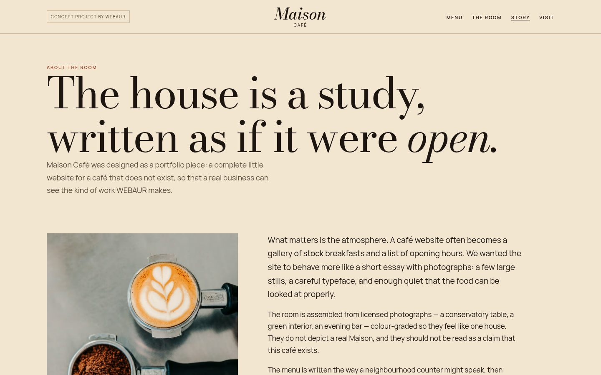
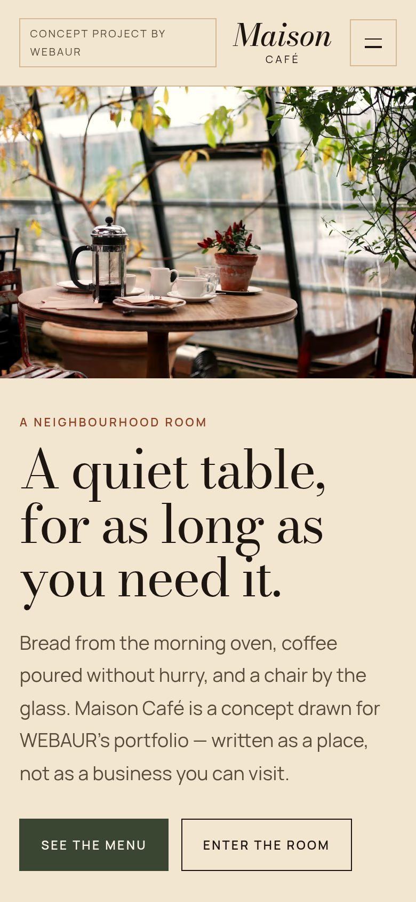
Aloita projekti
Rakennetaan jotain, jonka asiakkaasi muistavat.
Kerro yrityksestäsi ja siitä, mitä haluaisit parantaa, niin jatketaan siitä yhdessä.